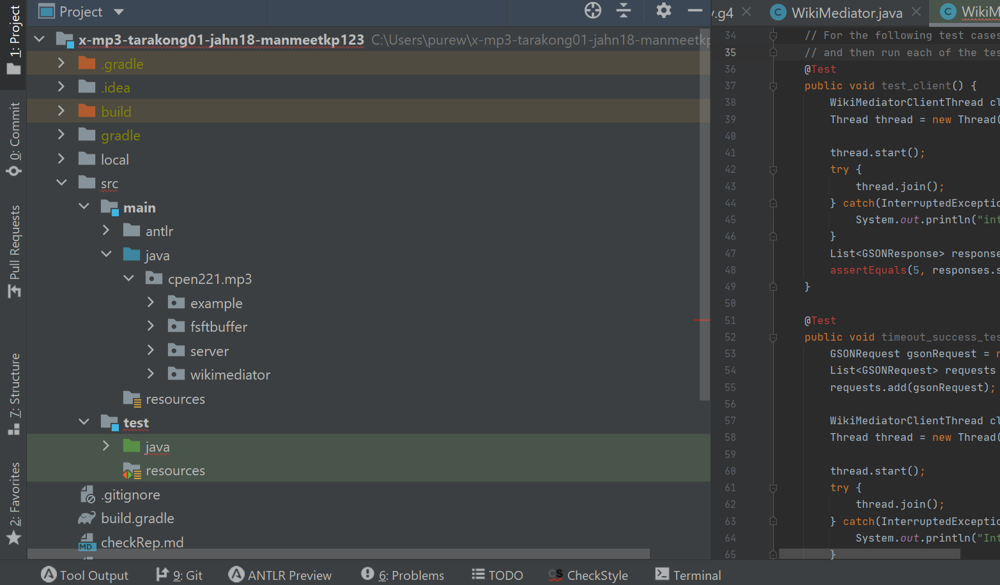

Mini-projects in Java
CPEN 221, a notoriously time-consuming second-year course, lived up to its reputation. This course completely shifted my career interests from mechanical and electrical to software, but this revelation came at the cost of a lot of late-nights, tears, and overall questioning whether I was in the right program. The learning curve for this course was huge as coming into the course I knew little more than if-statements and for-loops. But I was fortunate to have an amazing instructor who guided us along the way (Shout-out to Sathish!).
Over the course of the term, we worked on three mini-projects in groups of 3. Since most of the projects are reused year after year, I will not go into the technical details about them or post the associated github repo. Hence, following is a brief summary of each of the projects and what we accomplished at the end of each.
Image Processing Library
For this project, we had to implement an image processing library in Java to perform a total of 11 functions. Three of the most intriguing functions performed by our code were:- Green Screen: Performing green screen on a source image with a given image.
- Text Align: Aligning an image of a scanned text document by computing its discrete fourier transform.
- Rotation: Rotating a given input image.
The Graph Abstract Data Type
The second project involved implementing a graph datatype using an adjacency matrix and an adjacency list. After implementing the datatype, we utilized it in analyzing a 36MB file containing username and followers of some twitter users. Some of the algorithms that we implemented to analyze this file are briefly described below:- Depth first search: This algorithm starts at the root node and explores as far as possible along each branch before backtracking.
- Breadth first search: This algorithm starts at the root node and explores all nodes at the present depth prior to moving on to the nodes at the next depth level.
- Common Upstream vertices: This function returned a list of vertices which had an edge to two input vertices contained in the given graph.
WikiMediatorServer
The final project involved implementing a finite-space finite-time buffer in Java for caching wiki query functions to offset slow network requests. Throughout this project as well, we practiced proper sub-typing and OOP principles by drafting proofs, thread-safe arguments, and specifications to support the concurrency and parallelism offered by our implementation. In addition to the above, we implemented a structured query functionality to enable parsing complex and nested queries using ANTLR and parse tree.